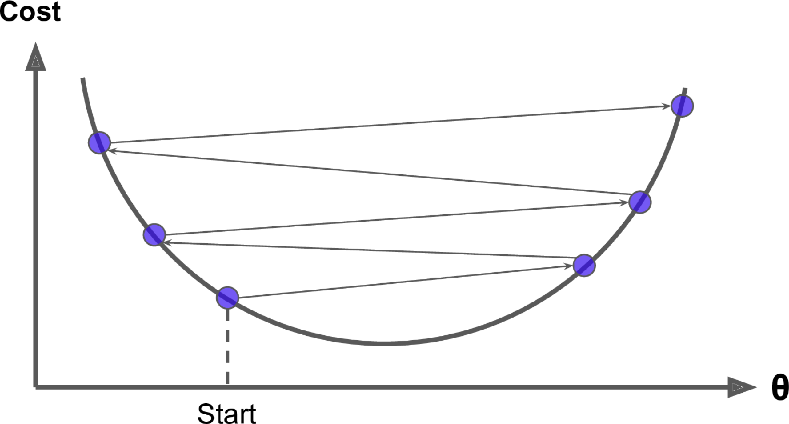
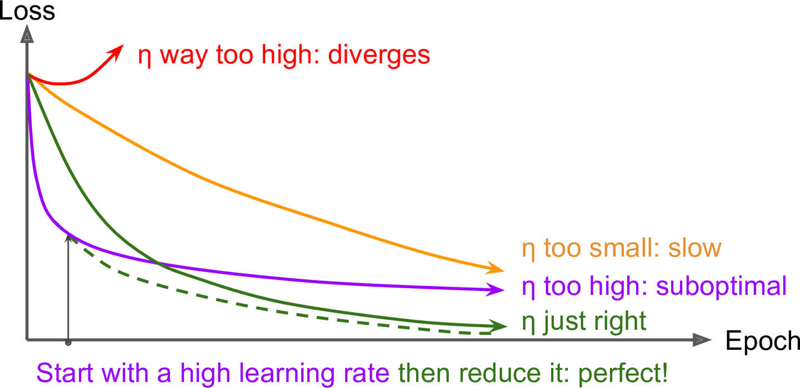

Show the package imports
import random
import numpy as np
import pandas as pdACTL3143 & ACTL5111 Deep Learning for Actuaries
This page is out of date for 2024, and will be updated shortly.
import random
import numpy as np
import pandas as pdObservations: \mathbf{x}_{i,\bullet} \in \mathbb{R}^{2}.
Target: y_i \in \{0, 1\}.
Predict: \hat{y}_i = \mathbb{P}(Y_i = 1).
The model
For \mathbf{x}_{i,\bullet} = (x_{i,1}, x_{i,2}): z_i = x_{i,1} w_1 + x_{i,2} w_2 + b
\hat{y}_i = \sigma(z_i) = \frac{1}{1 + \mathrm{e}^{-z_i}} .
import sympy
sympy.plot("1/(1 + exp(-z))");
data = pd.DataFrame({"x_1": [1, 3, 5], "x_2": [2, 4, 6], "y": [0, 1, 1]})
data| x_1 | x_2 | y | |
|---|---|---|---|
| 0 | 1 | 2 | 0 |
| 1 | 3 | 4 | 1 |
| 2 | 5 | 6 | 1 |
Let w_1 = 1, w_2 = 2 and b = -10.
w_1 = 1; w_2 = 2; b = -10
data["x_1"] * w_1 + data["x_2"] * w_2 + b 0 -5
1 1
2 7
dtype: int64Have \mathbf{X} \in \mathbb{R}^{3 \times 2}.
X_df = data[["x_1", "x_2"]]
X = X_df.to_numpy()
Xarray([[1, 2],
[3, 4],
[5, 6]])Let \mathbf{w} = (w_1, w_2)^\top \in \mathbb{R}^{2 \times 1}.
w = np.array([[1], [2]])
warray([[1],
[2]])\mathbf{z} = \mathbf{X} \mathbf{w} + b , \quad \mathbf{a} = \sigma(\mathbf{z})
z = X.dot(w) + b
zarray([[-5],
[ 1],
[ 7]])1 / (1 + np.exp(-z))array([[0.01],
[0.73],
[1. ]])Observations: \mathbf{x}_{i,\bullet} \in \mathbb{R}^{2}. Predict: \hat{y}_{i,j} = \mathbb{P}(Y_i = j).
Target: \mathbf{y}_{i,\bullet} \in \{(1, 0), (0, 1)\}.
The model: For \mathbf{x}_{i,\bullet} = (x_{i,1}, x_{i,2}) \begin{aligned} z_{i,1} &= x_{i,1} w_{1,1} + x_{i,2} w_{2,1} + b_1 , \\ z_{i,2} &= x_{i,1} w_{1,2} + x_{i,2} w_{2,2} + b_2 . \end{aligned}
\begin{aligned} \hat{y}_{i,1} &= \text{Softmax}_1(\mathbf{z}_i) = \frac{\mathrm{e}^{z_{i,1}}}{\mathrm{e}^{z_{i,1}} + \mathrm{e}^{z_{i,2}}} , \\ \hat{y}_{i,2} &= \text{Softmax}_2(\mathbf{z}_i) = \frac{\mathrm{e}^{z_{i,2}}}{\mathrm{e}^{z_{i,1}} + \mathrm{e}^{z_{i,2}}} . \end{aligned}
data| x_1 | x_2 | y_1 | y_2 | |
|---|---|---|---|---|
| 0 | 1 | 2 | 1 | 0 |
| 1 | 3 | 4 | 0 | 1 |
| 2 | 5 | 6 | 0 | 1 |
Choose:
w_{1,1} = 1, w_{2,1} = 2,
w_{1,2} = 3, w_{2,2} = 4, and
b_1 = -10, b_2 = -20.
w_11 = 1; w_21 = 2; b_1 = -10
w_12 = 3; w_22 = 4; b_2 = -20
data["x_1"] * w_11 + data["x_2"] * w_21 + b_10 -5
1 1
2 7
dtype: int64Have \mathbf{X} \in \mathbb{R}^{3 \times 2}.
Xarray([[1, 2],
[3, 4],
[5, 6]])\mathbf{W}\in \mathbb{R}^{2\times2}, \mathbf{b}\in \mathbb{R}^{2}
W = np.array([[1, 3], [2, 4]])
b = np.array([-10, -20])
display(W); barray([[1, 3],
[2, 4]])array([-10, -20])\mathbf{Z} = \mathbf{X} \mathbf{W} + \mathbf{b} , \quad \mathbf{A} = \text{Softmax}(\mathbf{Z}) .
Z = X @ W + b
Zarray([[-5, -9],
[ 1, 5],
[ 7, 19]])np.exp(Z) / np.sum(np.exp(Z),
axis=1, keepdims=True)array([[9.82e-01, 1.80e-02],
[1.80e-02, 9.82e-01],
[6.14e-06, 1.00e+00]])
Called batch gradient descent.
for i in range(numEpochs):
gradient = evaluate_gradient(loss_function, data, weights)
weights = weights - learningRate * gradientCalled stochastic gradient descent.
for i in range(numEpochs):
rnd.shuffle(data)
for example in data:
gradient = evaluate_gradient(loss_function, example, weights)
weights = weights - learningRate * gradientCalled mini-batch gradient descent.
for i in range(numEpochs):
rnd.shuffle(data)
for b in range(numBatches):
batch = data[b*batchSize:(b+1)*batchSize]
gradient = evaluate_gradient(loss_function, batch, weights)
weights = weights - learningRate * gradientWhy?


“a nice way to see how the learning rate affects Stochastic Gradient Descent. we can use SGD to control a robot arm - minimizing the distance to the target as a function of the angles θᵢ. Too low a learning rate gives slow inefficient learning, too high and we see instability”

In training the learning rate may be tweaked manually.
This is why can’t use accuracy as the loss function for classification.
Also why we can have the dead ReLU problem.
\hat{y}(x) = w x + b
For some observation \{ x_i, y_i \}, the (MSE) loss is
\text{Loss}_i = (\hat{y}(x_i) - y_i)^2
For a batch of the first n observations the loss is
\text{Loss}_{1:n} = \frac{1}{n} \sum_{i=1}^n (\hat{y}(x_i) - y_i)^2
Since \hat{y}(x) = w x + b,
\frac{\partial \hat{y}(x)}{\partial w} = x \text{ and } \frac{\partial \hat{y}(x)}{\partial b} = 1 .
As \text{Loss}_i = (\hat{y}(x_i) - y_i)^2, we know \frac{\partial \text{Loss}_i}{\partial \hat{y}(x_i) } = 2 (\hat{y}(x_i) - y_i) .
\frac{\partial \text{Loss}_i}{\partial \hat{y}(x_i) } = 2 (\hat{y}(x_i) - y_i), \,\, \frac{\partial \hat{y}(x)}{\partial w} = x , \, \text{ and } \, \frac{\partial \hat{y}(x)}{\partial b} = 1 .
Putting this together, we have
\frac{\partial \text{Loss}_i}{\partial w} = \frac{\partial \text{Loss}_i}{\partial \hat{y}(x_i) } \times \frac{\partial \hat{y}(x_i)}{\partial w} = 2 (\hat{y}(x_i) - y_i) \, x_i
and \frac{\partial \text{Loss}_i}{\partial b} = \frac{\partial \text{Loss}_i}{\partial \hat{y}(x_i) } \times \frac{\partial \hat{y}(x_i)}{\partial b} = 2 (\hat{y}(x_i) - y_i) .
Start with \boldsymbol{\theta}_0 = (w, b)^\top = (0, 0)^\top.
Randomly pick i=5, say x_i = 5 and y_i = 5.
\hat{y}(x_i) = 0 \times 5 + 0 = 0 \Rightarrow \text{Loss}_i = (0 - 5)^2 = 25.
The partial derivatives are \begin{aligned} \frac{\partial \text{Loss}_i}{\partial w} &= 2 (\hat{y}(x_i) - y_i) \, x_i = 2 \cdot (0 - 5) \cdot 5 = -50, \text{ and} \\ \frac{\partial \text{Loss}_i}{\partial b} &= 2 (0 - 5) = - 10. \end{aligned} The gradient is \nabla \text{Loss}_i = (-50, -10)^\top.
Start with \boldsymbol{\theta}_0 = (w, b)^\top = (0, 0)^\top.
Randomly pick i=5, say x_i = 5 and y_i = 5.
The gradient is \nabla \text{Loss}_i = (-50, -10)^\top.
Use learning rate \eta = 0.01 to update \begin{aligned} \boldsymbol{\theta}_1 &= \boldsymbol{\theta}_0 - \eta \nabla \text{Loss}_i \\ &= \begin{pmatrix} 0 \\ 0 \end{pmatrix} - 0.01 \begin{pmatrix} -50 \\ -10 \end{pmatrix} \\ &= \begin{pmatrix} 0 \\ 0 \end{pmatrix} + \begin{pmatrix} 0.5 \\ 0.1 \end{pmatrix} = \begin{pmatrix} 0.5 \\ 0.1 \end{pmatrix}. \end{aligned}
Start with \boldsymbol{\theta}_1 = (w, b)^\top = (0.5, 0.1)^\top.
Randomly pick i=9, say x_i = 9 and y_i = 17.
The gradient is \nabla \text{Loss}_i = (-223.2, -24.8)^\top.
Use learning rate \eta = 0.01 to update \begin{aligned} \boldsymbol{\theta}_2 &= \boldsymbol{\theta}_1 - \eta \nabla \text{Loss}_i \\ &= \begin{pmatrix} 0.5 \\ 0.1 \end{pmatrix} - 0.01 \begin{pmatrix} -223.2 \\ -24.8 \end{pmatrix} \\ &= \begin{pmatrix} 0.5 \\ 0.1 \end{pmatrix} + \begin{pmatrix} 2.232 \\ 0.248 \end{pmatrix} = \begin{pmatrix} 2.732 \\ 0.348 \end{pmatrix}. \end{aligned}
For the first n observations \text{Loss}_{1:n} = \frac{1}{n} \sum_{i=1}^n \text{Loss}_i so
\begin{aligned} \frac{\partial \text{Loss}_{1:n}}{\partial w} &= \frac{1}{n} \sum_{i=1}^n \frac{\partial \text{Loss}_{i}}{\partial w} = \frac{1}{n} \sum_{i=1}^n \frac{\partial \text{Loss}_{i}}{\hat{y}(x_i)} \frac{\partial \hat{y}(x_i)}{\partial w} \\ &= \frac{1}{n} \sum_{i=1}^n 2 (\hat{y}(x_i) - y_i) \, x_i . \end{aligned}
\begin{aligned} \frac{\partial \text{Loss}_{1:n}}{\partial b} &= \frac{1}{n} \sum_{i=1}^n \frac{\partial \text{Loss}_{i}}{\partial b} = \frac{1}{n} \sum_{i=1}^n \frac{\partial \text{Loss}_{i}}{\hat{y}(x_i)} \frac{\partial \hat{y}(x_i)}{\partial b} \\ &= \frac{1}{n} \sum_{i=1}^n 2 (\hat{y}(x_i) - y_i) . \end{aligned}
| x | y | y_hat | loss | dL/dw | dL/db | |
|---|---|---|---|---|---|---|
| 0 | 1 | 0.99 | 0 | 0.98 | -1.98 | -1.98 |
| 1 | 2 | 3.00 | 0 | 9.02 | -12.02 | -6.01 |
| 2 | 3 | 5.01 | 0 | 25.15 | -30.09 | -10.03 |
So \nabla \text{Loss}_{1:3} is
nabla = np.array([df["dL/dw"].mean(), df["dL/db"].mean()])
nabla array([-14.69, -6. ])so with \eta = 0.1 then \boldsymbol{\theta}_1 becomes
theta_1 = theta_0 - 0.1 * nabla
theta_1array([1.47, 0.6 ])| x | y | y_hat | loss | dL/dw | dL/db | |
|---|---|---|---|---|---|---|
| 0 | 1 | 0.99 | 2.07 | 1.17 | 2.16 | 2.16 |
| 1 | 2 | 3.00 | 3.54 | 0.29 | 2.14 | 1.07 |
| 2 | 3 | 5.01 | 5.01 | 0.00 | -0.04 | -0.01 |
So \nabla \text{Loss}_{1:3} is
nabla = np.array([df["dL/dw"].mean(), df["dL/db"].mean()])
nabla array([1.42, 1.07])so with \eta = 0.1 then \boldsymbol{\theta}_2 becomes
theta_2 = theta_1 - 0.1 * nabla
theta_2array([1.33, 0.49])